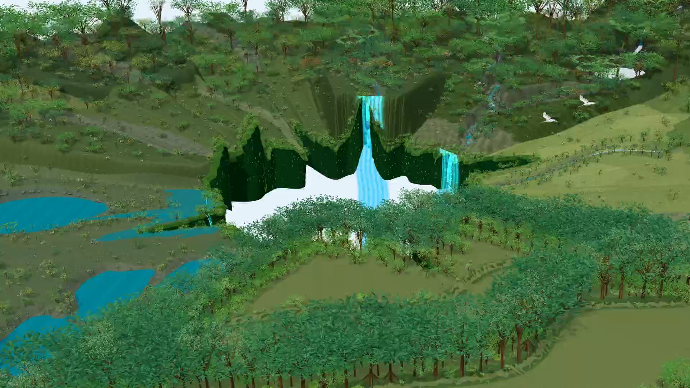
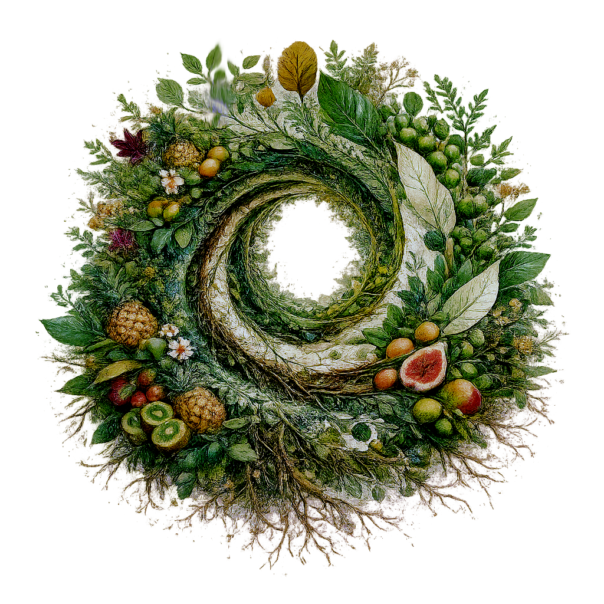
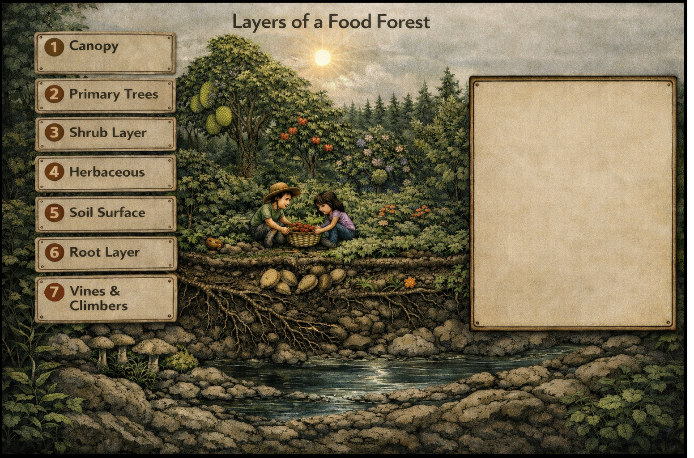

01 / Education
Grow
understanding.
Food forests, rare plants, living ecosystems and place-based stories. The education wing will grow into activities and games for kids, families and schools.
Explore education A new way to connectNourishland · living worlds
Plants, places and the connections between them. A world of learning, waiting to be explored.

Mapping & discovery · one Nourishland pathway
Nourishland is the wider learning world. Its platform gives people tools to map, connect, create and explore. Begin with a guide for the device and task that suit you.
Read on screen. Observe in place. Create in Studio. Augmented exploration is one way in.

The Nourishland platform · a landscape in view
Imagine an expansive landscape like Border Ranges: paths, water, plants, habitats, stories and questions connected in one view. Nourishland’s map layer can help people move from the whole landscape to the knowledge held within it.
Illustrative platform concept. This diagram is not a geographic depiction of Border Ranges or a live map. A future Place Atlas would connect landscapes, learning and projects; each project’s IMAP remains its own working map.
Two ways into Nourishland
Food forests, rare plants, living ecosystems and place-based stories. The education wing will grow into activities and games for kids, families and schools.
Explore education A new way to connectMapping and discovery tools connect places with plants, projects and learning. The platform supports Nourishland’s wider educational and ecological work.
Discover the platformFrom idea to living prototype
A living food forest and NourishlandXR’s first owned prototype for testing connected plant knowledge in a real place.
Explore the Hillyards projectHelp it grow
Help develop a public tool that makes living knowledge easier to access, understand and share.
Start a conversationContribute observations, sources, plant knowledge or a learning resource. Help make the material useful, clear and well grounded.
Discuss a contribution ↗Educators and ecological collaborators can help define activities, review content and evaluate what people learn.
Explore collaboration ↗Support a bounded prototype, accessible resources or maintenance through sponsorship, technical help or in-kind contributions.
Discuss support ↗Contributions are discussed and reviewed before publication. Sponsor acknowledgement and responsibilities are agreed for each collaboration.
A new way to grow · food forest learning
A food forest begins with a place, its conditions and the people who care for it. It takes inspiration from forest structures and relationships, then brings food and useful plants into that living pattern.
There is no single layout for every site. Light, water, soil, climate, terrain, access and purpose shape what can thrive. Observation comes before a confident design.
A living system · a place to learn
Food forests can combine harvest, habitat, beauty, shelter and learning in one evolving place.
Why Nourishland connects to food forests
High diversity means more than having many species. Each may hold several roles, functions and relationships that change with place and time. The learning value of that richness is limited when useful information is difficult to find, connect or understand.
Nourishland is being developed to link plant and place records with their roles, functions, relationships, sources and learning paths. People can follow one question into a wider picture, while keeping the real place and its changing conditions in view.
See how the platform connects knowledge01 · Read the layers
Forests use vertical space in different ways. Select a layer to explore the roles it can play in a food forest.

A place in the system
Upper-storey trees can capture sunlight, shape shade and shelter, and create a high framework for other life. Their suitability depends on mature size, climate, water and the space available.
02 · Follow the functions
Consider harvest, habitat, soil, water, shelter and human experience together. Which functions are possible depends on species, design, place and care.
Choose a mix of plants whose harvests can arrive across seasons and years.
Notice how layers, cycles and relationships can guide a cultivated system.
Flowering plants and suitable habitat can support pollinators and seed setting.
Shade, scent, beauty and places to pause can make a landscape welcoming.
A varied planting can spread risk and create different kinds of habitat and harvest.
Leaves, roots and fungi contribute organic matter and soil relationships over time.
Soil cover and structure can help water soak in, while site conditions shape where it flows.
Healthy soil can retain moisture for plants between rain events.
Plants turn sunlight into growth; soil and perennial structure hold some of that value over time.
03 · Find your starting question
Food forest education can welcome a beginner and still leave room for deep inquiry. Move through the five questions or choose the one that matters now.
Imagine the possibilities
An ornamental sanctuary. A productive farm. A sensory garden. A source of favourite ingredients, rare fruit, herbs, medicine or seasonal abundance. A biodiversity refuge, a livelihood or a legacy. Many landscapes combine several purposes.
04 · Choose an orientation
These are tendencies, not fixed categories or a ranking. Many mature places hold parts of all three.
Orderly · low-input · systems-led
Clear spacing and access paths; plants selected for resilience and function; practical to maintain and adapt.
Long-term stability, labour efficiency and self-regulation over unnecessary intervention.
A legible system that can age well and help people understand ecological functions.
05 · Ideas and practitioners
Many people draw on practitioners who have shaped natural farming, permaculture, landscape design and syntropic agroforestry. Their ideas grew from different places and contexts; use them as questions and approaches, not one universal recipe.
Begin with observation. Reduce disturbance where it is useful, and ask what the land is already doing.

From learning to place
Hillyards Food Forest is NourishlandXR’s first owned example for exploring how food-forest knowledge can connect to a real place.
Explore the Hillyards projectTools · access guides
Each route has its own guide. See what it is for, what works today, and what will happen before you launch anything.
The website brings together curated learning: how food forests work, how living systems connect, and what can be learned from a place such as Hillyards.
These are editorial website pages. A searchable, connected public knowledge library is a future platform direction; the current Creator test projects do not provide that service or access to a live shared database.
Field is the phone companion for place-based learning. Use it in a mobile browser to explore a project, follow field activities and keep personal observations. A Field visit can provide project context and capture supported observations; the local notes/progress in the current app are not confirmed as shared IMAP records.
Current access: mobile web preview. Offline downloads and specialist tools are still developing.
How Field relates to IMAPStudio is intended for people who create, curate and review project knowledge. It sits behind the public learning website and should use a Nourishland account with explicit author permissions; WordPress administration is a separate system.
Current status: development/test entry only. A production account flow, roles and shared publishing database are not confirmed or available through this preview.
How project IMAP fits in See the first-time Creator guideInteractive Map (IMAP) and Flat map are available in browser Creator for exploring the same saved project. They use its Areas, records and relationships, with the same project identities across views.
Open your saved project in Creator, then choose Flat map or IMAP. Geographic map context is shared within the project; physical XR anchors and printed tags remain separate. Optional presentation customization depends on the current build and is not required to begin.
Browser map views are available for testing. Author sign-in and API access apply; native Unity launch and public publication are separate acceptance checks. The illustration on this website does not open a live Hillyards map.
Open your project in CreatorWebXR is an experimental introduction to encountering knowledge in augmented space. Read the device note first; if immersive features are unavailable, the ordinary web page remains accessible.
Current access: experimental browser experience. Immersive support varies by device and browser.
XR Spatial is the headset direction for Creator and Explorer. It is being developed alongside Field, Studio and the independent WebXR introduction. A future spatial view may present a project's IMAP, while physical XR anchor positions remain a separate layer from the conceptual map layout.
Current access: in development. Public distribution, spatial IMAP access and shared authoring are not yet defined. No native deep link is available from this guide.
Understand the project IMAP See the planned Creator workflowCreate · a beginner's starting point
Begin with a question and a place. Add an Area, connect your first record, then save and return as your understanding grows.
These are different views of the same project, using the same project and record identities. Choose a view for the task; changing devices should keep you in that project.
Beginner flow in development. This website explains the journey and opens Creator. The deployed browser tutorial is available in explicit testing mode. Cross-device access and native Unity handoff remain separate acceptance checks.
Take the first step
Choose a browser workspace. Creator handles project setup, sign-in and saving; this website does not create or publish a project.
Open Creator · choose New projectReturn to projects ↗Creator access requires author sign-in. Explicit testing mode opens the deployed guided setup.
The shared beginner sequence
An introduction to the guided flow being developed in Creator. Each step should build on the project you have already started.
Name this project and tell us what you want to grow, care for, learn about, or share. You can change the name and purpose later.
Set one starting location for the project. Use device location after choosing to share it, or enter coordinates manually. This gives broad map context, not physical record placement.
Use that origin to load map information and check the location. If the map service is unavailable, keep the origin, retry or continue by place name.
Describe a meaningful place inside the project, such as an orchard or a habitat. Use your existing working Area or add one. The system Home example is separate from your first working Area.
Add your own first plant, note or supported element to the working Area. A Pigeon Pea example may be available as a reference in Home; keep that example separate without duplicating it.
Wait for a confirmed save, reopen the same draft project, then switch between flat view and IMAP. Both use the same records. Saved does not mean published.
Choose a view for the task
The common project structure connects these views. The links explain current access; native Unity authoring and cross-device behavior still need acceptance testing.
Organise the same project's Areas and records, edit knowledge and review how it is presented.
Browser Creator workspace. Account permissions apply; publication is a separate action.
Start or continue in Creator →Take the same project into the field through its mobile Creator view. Observe and capture what the current tools support.
The public Field companion's personal notes are separate from shared Creator records; automatic sync is not established here.
Field access guide →The native direction for working with the same project through spatial Creator and Explorer views.
Native testing build and project handoff required. A browser spatial link is not a Unity installer or deep link.
Unity spatial access guide →A project map, as it takes shape
Flat map and Interactive Map (IMAP) let you explore the same saved project in browser Creator. They follow its Areas and records rather than creating separate project copies. Open your own project through the entry above; optional customization does not block getting started.
The project's geographic origin provides broad map context. Physical XR anchors and printed ArUco tags identify or position things in a local space; they do not replace that project origin.
Return, retry, continue
These are the recovery expectations for the beginner tutorial under development. Confirm the save state in the Creator build you are testing.
Use manual location entry for the same project origin. Permission denial should lead to that alternative rather than require another project.
Keep the current draft and project ID. Retry the unavailable step or return when the service is reachable; starting another project should not be the recovery path.
Return to the saved project and resume its remaining step. Switching between a flat view and IMAP should preserve its project, Areas and records. Check saved progress before changing devices.
Begin with your first working Area and your own record. Current test builds keep the system Home Area and Pigeon Pea example separate as reference content; they do not count as your first working Area or record. Reopening setup should reuse your saved working content without duplicates.
No. Saved progress is intended to remain a draft until an explicit, permitted publication step. Public Explorer access must show only content authorised for publication.
The selection changes the launch link only. It does not create data or verify that a typed project ID exists. Native Unity access is configured outside this website.
Choose a spatial experience
The browser spatial Creator preview is a web workspace. Unity spatial is the native Creator and Explorer direction for the same project. The independent WebXR introduction is a visitor experiment. Read each access guide before choosing a route.
Begin with the prototype
Start from its food-forest learning, then consider how Field observations and future XR experiences could add place context.
Project · first NourishlandXR prototype
A real, evolving food forest used as an educational example and the first owned prototype for NourishlandXR.
Food forests hold many layers, species, functions and relationships. Hillyards gives Nourishland a real place to explore how those connections can be recorded, understood and shared through a public learning tool.
The project links the Grow pathway with NourishlandXR development. Its focus is educational and technical: use a real place to examine how connected knowledge can support learning.
Prototype focus: connect selected plant and place knowledge, make relationships easier to follow, and examine how spatial experiences may support learning.
Learn · A new way to connect
This learning wing will explore natural ecosystems, regeneration and care across forests and other living systems.
Explore how species, soil, water, climate and habitat interact in particular places. Nourishland will connect observations with sources and learning paths, while making clear what is known and what still needs review.
Content for this wing is being developed. No conservation projects, partners or outcomes are implied by this preview.
About Nourishland
Nourishland is a public tool for exploring, connecting and creating knowledge about living places.
Grow and Connect are learning wings on the public website. Field and XR offer other ways to encounter learning. Desktop Studio is the intended permissioned authoring space. A shared public knowledge library is a future platform direction.
The botanical wheel and discovery die are Nourishland’s identities for curiosity and exploration.
Nourishland Pilot Places · founding cohort
Apply to become an early Nourishland pilot. Tell us about your place, the people it serves and what you would like visitors to learn or experience. Selected pilots receive direct guidance through project structure, mapping, learning and spatial preparation.
Applying is an expression of interest. It does not create an account, require a commitment or guarantee acceptance, funding, hardware, travel or a launch date.
Continue to the pilot applicationA place-based learning experience
A structured project with a flat map and Interactive Map (IMAP), an educational pathway, optional spatial learning and a visitor-ready example that others can learn from.
Who should apply
Schools, gardens, community groups, councils, landholders, educators and aligned organisations with a real place or credible local partnership are welcome to share their interest.
From interest to learning
Project and place structure, map and IMAP preparation, a learning and spatial plan, software configuration, a hardware plan, agreed onboarding, host training and a commissioning checklist.
Permission to use the place and source material, safe access, one dependable local coordinator, accurate local information, visitor supervision and the resources agreed in the written scope.
Eight short groups · no exact address needed
The real application service is not connected in this testing preview. You can review your answers on this device; they are not stored or sent.
Local review only
This is a preview on this device. Nothing has been sent, no account or pilot record was created, and Nourishland has not been contacted.
No. Applications are reviewed by a person. Selection, hardware, funding, travel, installation and ongoing support are not guaranteed and would be defined in a written scope.
Nourishland may invite you to a discovery conversation, ask for more information or suggest a future-city waitlist. A coordinated project and Creator access come only after readiness review and an agreed scope.
Applying is free. Any delivery costs, hardware, travel, installation time and support would be discussed and scoped before work is agreed.